Art
Art & Sculptures
ART & SCULPTURES
Art during the Classical Period of ancient Greece, from around 480 to 323 BCE, became famous for its beauty, balance, and attention to detail. Greek artists aimed to represent the human body and the world around them in a more realistic and natural way, while still showing an ideal form of beauty. This period marked an important development in sculpture, painting, pottery, and architecture. Artists studied human anatomy, movement, facial expressions, and proportions to create works that appeared lifelike and harmonious. Their art was also closely connected to religion, as many works were created to honor the gods, decorate temples, or tell stories from Greek mythology.

Classical Greek art was not only about beauty but also reflected the values and achievements of Greek society. Sculptures of athletes and gods often represented strength, courage, and perfection, while painted pottery showed scenes from mythology, warfare, festivals, and everyday life. Temples and public buildings were designed with careful proportions and decorated with impressive sculptures, making art an important part of city life. Athens became one of the leading centers of artistic activity, especially during the rule of Pericles, when major building projects transformed the Acropolis. The artistic ideas developed during this period influenced later civilizations, particularly the Romans, and continued to shape European art and architecture for centuries.
SCULPTURES
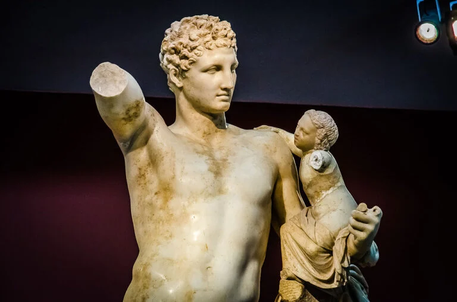
After the Greeks defeated the Persians in 479 BCE, Athens became one of the most powerful cities in Greece, not only politically and economically but also culturally. The city grew wealthy through its leadership of the Delian League, an alliance originally created to protect Greek cities from future Persian attacks. Over time, Athens gained greater control over the alliance's money and resources, allowing it to fund impressive public buildings and artistic projects. Under the leadership of Pericles, the Acropolis was transformed into a symbol of Athenian power and achievement. One of the most famous buildings constructed during this period was the Parthenon, a temple dedicated to Athena, the city's patron goddess. Inside stood a magnificent statue of Athena made from gold and ivory by the sculptor Phidias. The temple's marble structure and detailed sculptures became some of the finest examples of Classical Greek art.
During the Classical Period, Greek artists focused on creating works that combined realism, balance, harmony, and ideal beauty. Sculptors studied the human body carefully to represent natural movement, accurate proportions, and lifelike poses. Polykleitos became famous for developing a system of proportions that influenced the way the human figure was represented. Bronze was widely used for statues because of its strength and appearance, although many original bronze sculptures have been lost and are known today through Roman marble copies. Vase painting also developed significantly, especially through the red-figure technique, which allowed artists to show the human body and movement in greater detail. Despite the Peloponnesian War between Athens and Sparta, artistic activity continued throughout the fourth century BCE. Sculptors such as Praxiteles introduced new approaches, including lifelike representations of the female nude, while the decorative Corinthian column style became increasingly popular. Later, under Philip II and his son Alexander the Great, Greek art spread to new regions as Greek artists travelled and worked beyond Greece. These achievements influenced later civilizations and helped establish Classical Greek art as one of the most important foundations of Western artistic tradition.
Sculpture Gallery


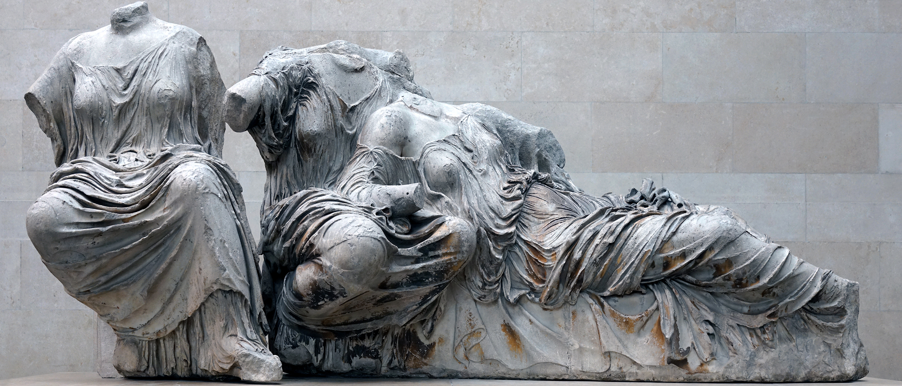
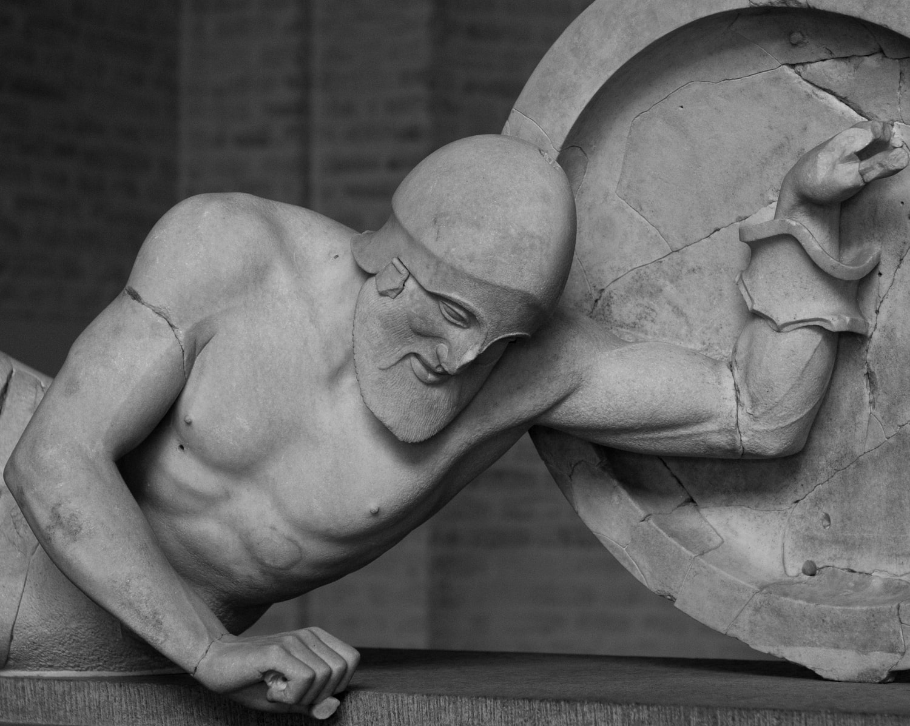
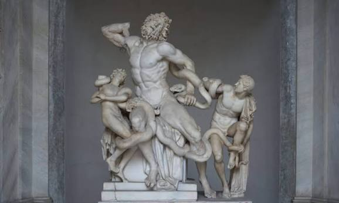
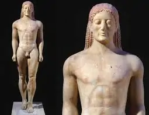
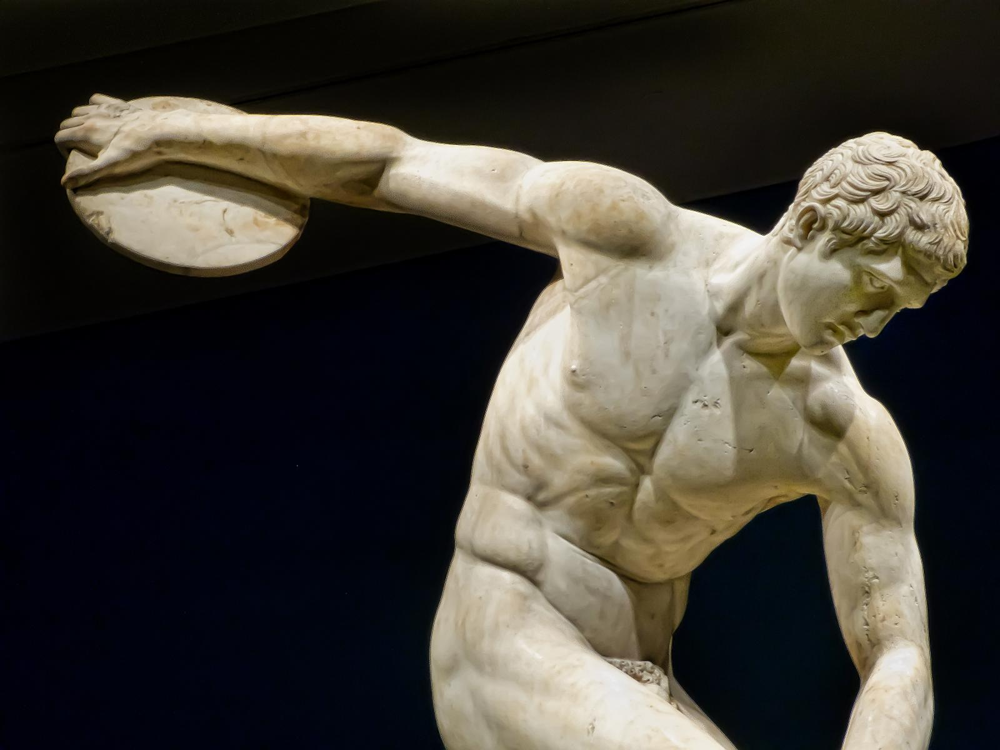
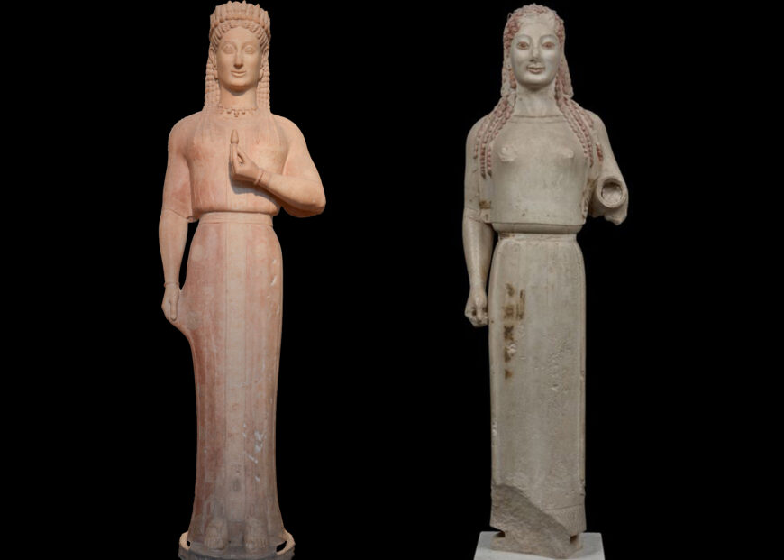
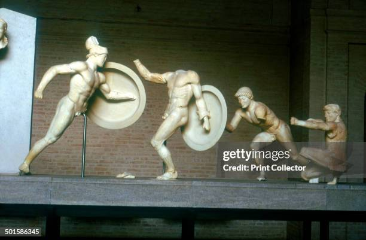
ART
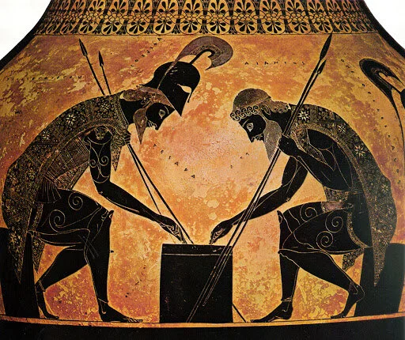
Vase painting was an important part of ancient Greek art during the Classical Period (c. 480–323 BCE). Although the red-figure technique originated in the late Archaic Period, it continued to develop and flourish during the Classical era. In this technique, artists left the figures the natural reddish colour of the clay and painted the background black. Using fine brushes, they added details such as muscles, facial features, clothing, and hair, allowing them to represent the human body more naturally and show a wider range of movements and poses.
Several well-known vase painters worked during this period, including the Berlin Painter, the Achilles Painter, and Douris. Each developed a distinctive style. The Berlin Painter often focused on individual figures against simple backgrounds, while the Achilles Painter was known for elegant figures and carefully arranged clothing. Douris created detailed scenes featuring mythology, warriors, and everyday activities. Their works demonstrate the Classical interest in proportion, balance, and the realistic representation of the human figure.
The subjects depicted on Greek vases included gods, heroes, and mythological stories, as well as scenes from everyday life. Artists painted athletes training for competitions, musicians playing instruments, people attending banquets, and young men receiving an education. Other vases illustrated religious ceremonies, weddings, warfare, and theatrical performances. These images provide valuable information about Greek beliefs, traditions, and social life.
Another style was white-ground painting, which became popular during the fifth century BCE. Artists applied a light-coloured surface to the vase, allowing them to add delicate details and additional colours. This technique was especially common on lekythoi, vessels often associated with funerary rituals. Their decoration frequently showed visits to graves, offerings to the deceased, and scenes connected with beliefs about death and the afterlife.
During the fourth century BCE, Athenian vase production gradually lost some of its dominance, while pottery workshops in southern Italy developed their own regional styles. These works often featured elaborate compositions, mythological scenes, and additional colours. Today, Greek vases are among the most valuable sources for understanding Classical art because many larger paintings from this period have not survived. Their decoration preserves evidence of Greek artistic techniques, mythology, religious practices, and everyday life.
Vase Painting Gallery
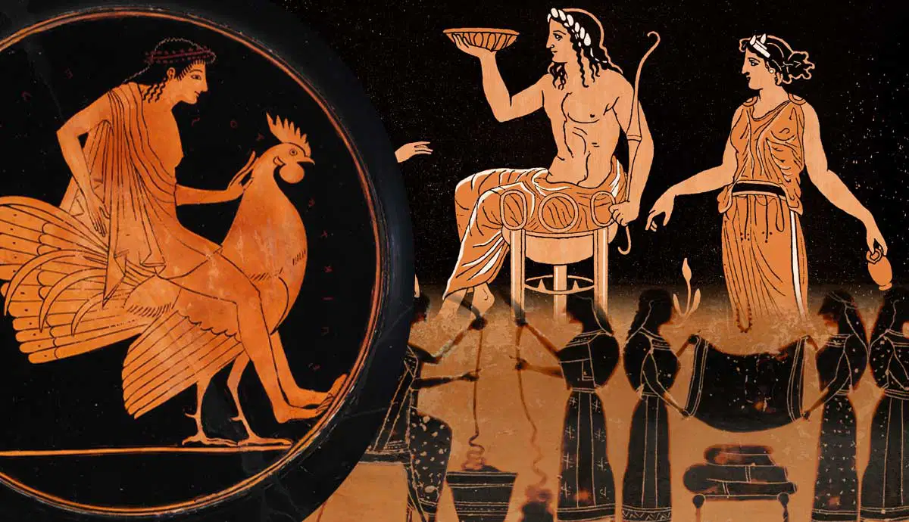
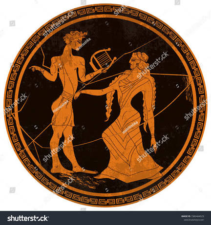
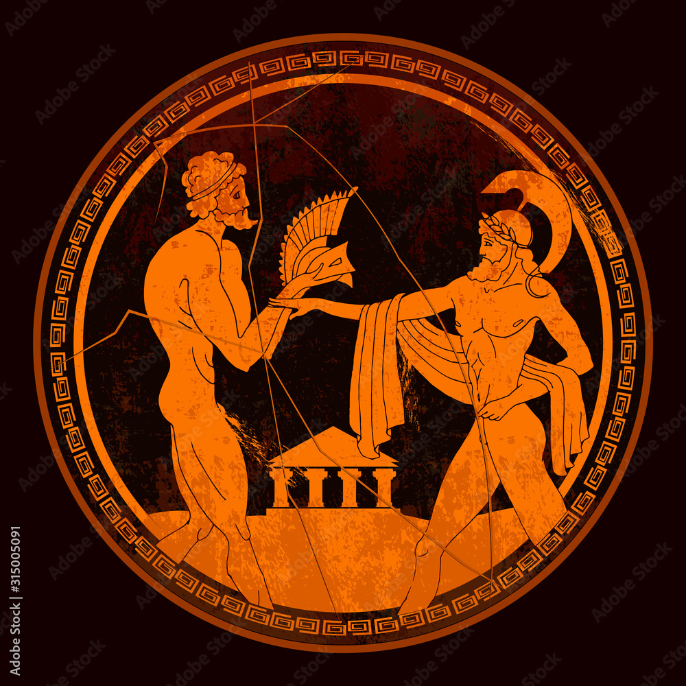
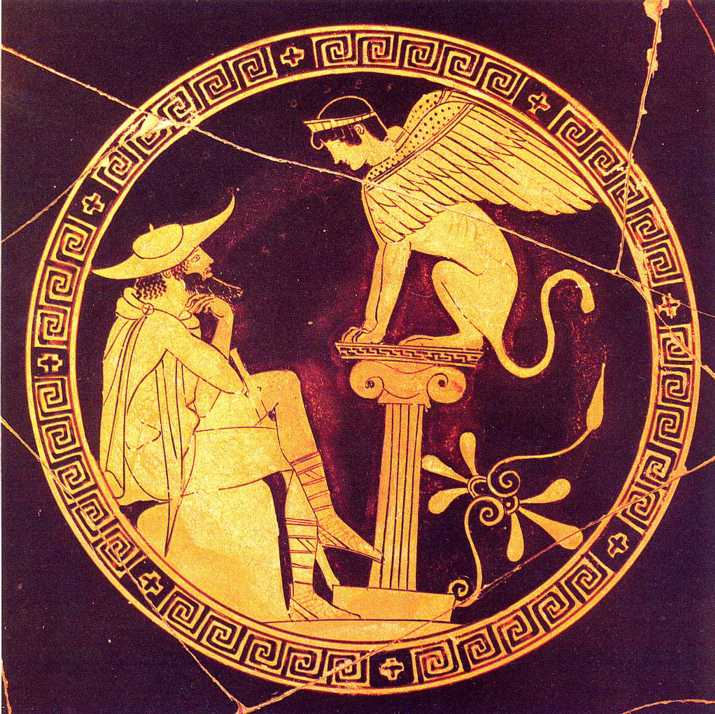
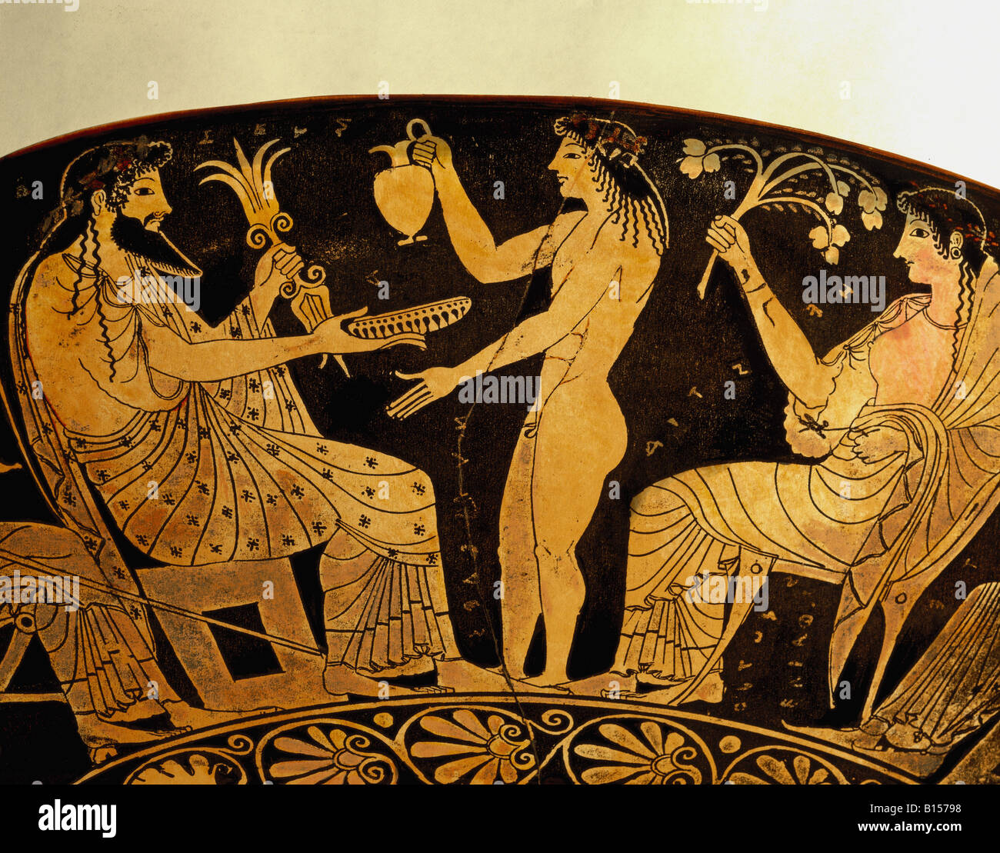
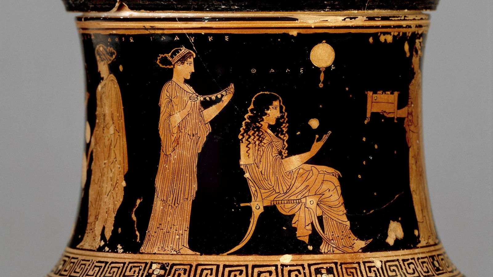
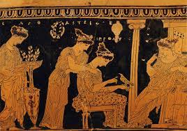
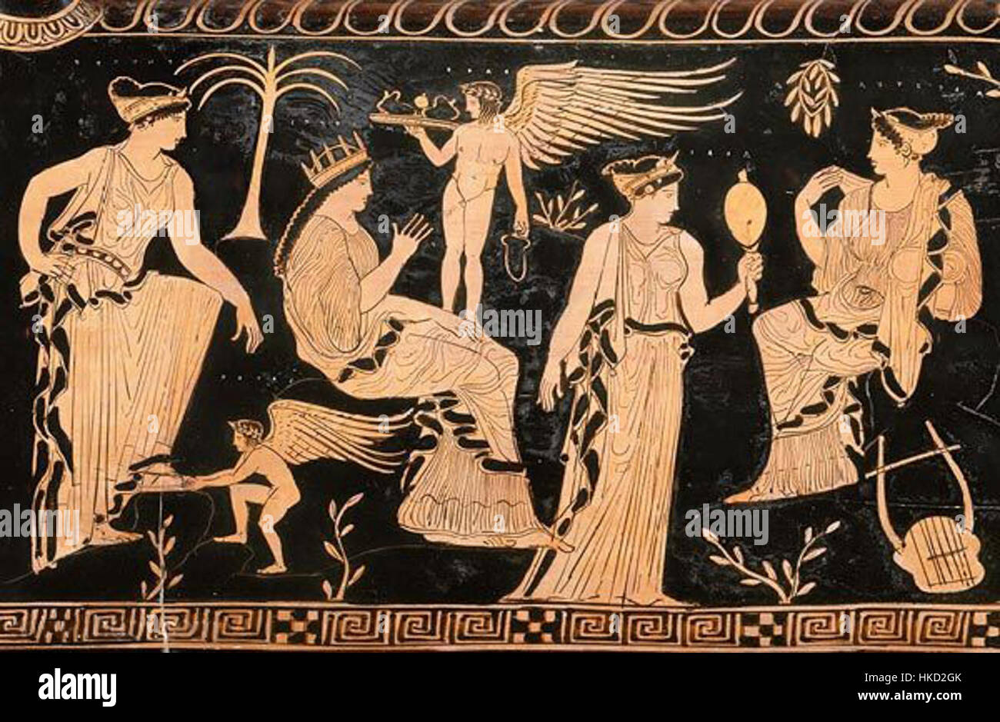
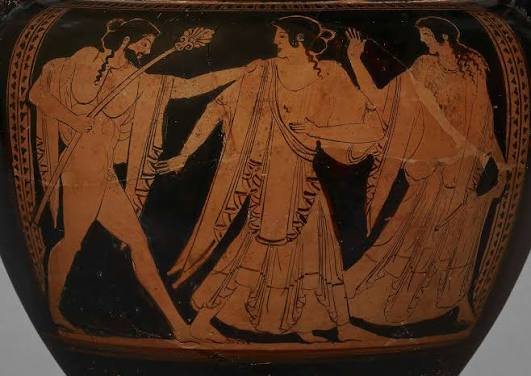